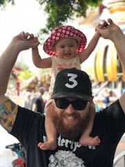

About Me
Hello! My name is Austin Wayman. I'm from Branson, Missouri but I currently reside in Phoenix, AZ! I currently work at Apple Scottsdale Fashion Square as a Genius. I enjoy spending time with my wife and 1-year-old daughter Lincoln.
Along with being a Genius I also play snare drum on the Arizona Cardinals Drumline! This will be my 5th year playing for this great organization. Not only do I get paid to do what I love but I also get to watch the best sport of the planet. Can't beat that!
I also enjoy going to Disneyland with my family, tiki culture, video games, Lord of the Rings, Harry Potter, Dungeons & Dragons, and other random nerdy things.